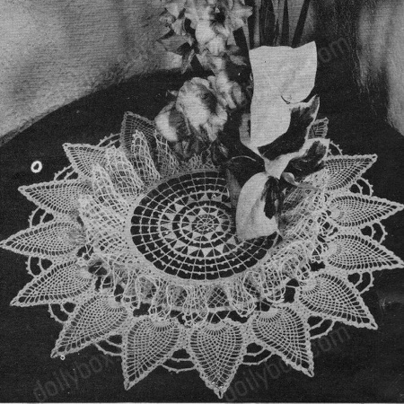

Ruffles and Flourishes
This crochet doily features an exquisite design, characterized by delicate ruffles and intricate flourishes that radiate outward from its center. Crafted with fine crochet thread and a skilled hand, the doily begins with a beautifully detailed motif at its core, capturing attention with its fine craftsmanship. As the pattern progresses, the doily gracefully expands with multiple rounds of stitches, each carefully arranged to create mesmerizing ruffles that lend a sense of elegance and dimension to the piece.
MATERIALS:
DAISY Mercerized Crochet Cotton size 30:-2 skeins or balls White.
Crochet hook size 13.
Size-18 inches.
CENTER: Ch 8, sl st in 1st st. Ch 11, sc in 5th st from hook for a p, ch 2, tr in ring, (ch 6, p, ch 2, tr in ring) 6 times, ch 6, p, ch 2, sl st in 5th st of 1st ch.
ROW 2: Ch 5 for a tr, * ch 8, sk last ch st, (sc, hdc, dc, tr, dtr and 2 tr tr) in next 7 ch sts, tr in next tr. Repeat from * around, joining 8th triangle with a sl st in 5th st of 1st ch.
ROW 3: Ch 12, sc in next point, (ch 7, tr in next tr, ch 7, sc in next point) repeated around, ch 7, sl st in 5th st of 1st lp.
ROW 4: Ch 1, * (4 sc, ch 5, sl st in last sc for a p, and 4 sc) in next sp, sc in next st. Repeat from * around.
ROW 5: Ch 5 for a tr, * ch 9, sk last st, (sc, hdc, dc, tr, 2 dtr and 2 tr tr) in next 8 sts, tr midway between next 2 ps. Repeat from * around and join to 5th st of 1st lp.
ROW 6: Ch 14, sc in next point, (ch 6, dtr in next tr, ch 6, sc in next point) repeated around. Ch 6, sl st in 8th st of 1st lp.
ROW 7: Ch 1, * (4 sc, a p, 3 sc) in next sp, sc in next st. Repeat from * around.
ROW 8: Ch 6 for a tr, (ch 8, sc in 5th st from hook, ch 4, tr between next 2 ps) repeated around. Join to 6th st of 1st lp.
ROW 9: Repeat ROW 8.
ROW 10: Ch 16, tr in next tr, (ch 10, tr in next tr) repeated around and join to 6th st of 1st lp.
ROW 11: Ch 3, (10 dc in next sp, dc in tr) repeated around, sl st in 1st 3-ch.
ROW 12: Ch 1, 1 sc in each dc around and join.
RUFFLE: Turn, (ch 7, sc in 1 lp of next 4th sc) repeated around, with ch 3 and dc for final lp. Turn, * ch 7, (sc, ch 7, sc) in next lp. Repeat from * around, making ch 3 and dc for final lp. ** Turn, (ch 7, sc in next lp) repeated around, with ch 3 and dc for final lp. Repeat from ** 6 times with next row of 8-ch lps and 4-ch and dc for final lp; Next row, 9-ch lps and 4-ch and tr end lp; Next row, 10-ch lps and 5-ch and tr end lp; Next row, 11-ch lps and 5-ch and dtr end lp; Next row, 12-ch lps and 6-ch and dtr end lp; Next row, 13-ch lps and 7-ch and dtr end lp.
Edge: Turn, * (ch 14, sc in next lp) twice, (ch 6, p, ch 2, tr) 4 times in 7th (center) st of next lp, ch 6, p, ch 2, sc in next lp. Repeat from * around. Cut 6 inches long, thread to a needle and fasten off on back.
BORDER: Holding ruffle down in front, join to back lp of 1 sc in Row 12, (ch 8, sc in next 4th sc) repeated around, with 4-ch and dc end lp (88 lps).
ROW 2: (Ch 8, sc in next lp) repeated around with 4-ch and dc end lp.
ROWS 3 thru 6 Repeat ROW 2.
ROW 7: Ch 8, dc in next lp, (ch 5, dc in next) repeated around. Join to 3d st of 1st lp.
ROW 8: Ch 3, (5 dc in next sp, dc in dc) repeated around. Join to 1st 3-ch.
ROW 9: * Ch 10, (dtr, ch 10, dtr) in next 11 dc, ch 10, sk 10 dc, sc in next 6 dc, a 5-ch p, sc in next 6 dc. Repeat from * around (16 shells).
PINEAPPLE: Sl st in 8 sts of 1st 10-ch, ** ch 3, (dc, ch 2, 2 dc) in bal. of same lp, 13 tr in next lp, (2 dc, ch 2, 2 dc) in next lp.
ROW 2: Ch 2, turn, sl st in center sp of shell, ch 3, (dc, ch 2, 2 dc) in same sp, (ch 1, tr in next tr) 13 times, ch 1, (a 2 dc, ch 2, 2 dc shell) in next shell.
ROW 3: Ch 2, turn, sl st in shell, ch 3, (dc, ch 2, 2 dc) in same sp, (ch 4, sc between next 2 tr) 12 times, ch 4, a shell in next shell.
ROW 4: Ch 2, turn, sl st in shell, ch 3, (dc, ch 2, 2 dc) in same sp, sk next sp, (ch 4, sc in next lp) 6 times, ch 4, sc in same lp (a widening), (ch 4, sc in next lp) 5 times, ch 4, sk next 4-ch sp, a shell in next shell. * Make 2 more rows without center widening (1 less lp in each row than in previous row).
Next make a row with a center widening as in Row 4. Repeat from * 3 times. Make 2 more rows (1 lp only in center of final row). Ch 2, turn, make a shell, ch 4, sc in center lp, ch 4, a shell in next shell. Ch 2, turn, a shell in shell, a shell in next shell. Ch 2, turn, (sl st, ch 3, dc) in shell, 2 dc in next shell. Fasten off on back.
2d PINEAPPLE: Join to left end of next 10-ch lp and repeat from ** to *. Sl st in corner of 4th shell up side of last Pineapple, ch 2, turn, sl st back in shell, ch 3, sl st in corner of next shell on last Pineapple, (dc, ch 2, 2 dc) to complete shell. Continue as for 1st Pineapple, joining in same way to previous Pineapple by the next 4 rows. Make 3 more rows, then ch 10, sl st in corner of next 3d shell on previous Pineapple, ch 1, turn, (6 sc, a p, 6 sc and 1 sl st) on 10-ch lp, ch 2, sl st in shell and make 2 more rows. Ch 20, sl st in next 2d shell on previous Pineapple, ch 1, turn, (6 sc, p) 3 times, 6 sc and 1 sl st all on 20-ch lp, ch 2, sl st in shell and complete Pineapple with 7 rows. Fasten off. Repeat 2d Pineapple 14 times, joining left side of 16th Pineapple to 1st one. Also make the 10-ch and 20-ch connecting lps, breaking thread each time.
Dip Doily in thin, hot starch, roll in a cloth to absorb excess, stretch to limit and pin right-side-up on a padded board. As starch sets, arrange ruffle in even ripples. Let remain until dry.
HOME